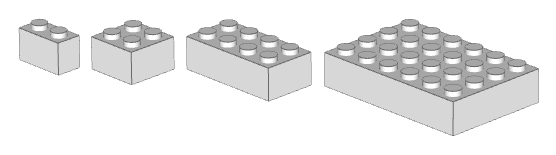
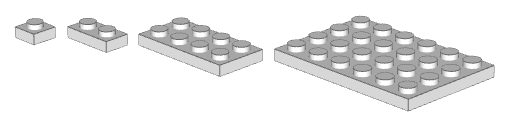
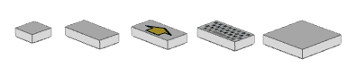
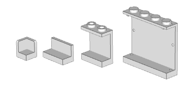
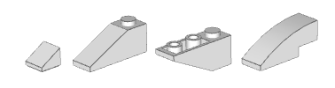
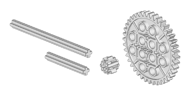

Bricks
Bricks are the standard LEGO pieces. They come in many sizes, from 1xN to 2xN and beyond.

Plates
Plates are the thinner variants of bricks. Three plates stacked on top of each other make a brick.

Tiles
Tiles are plates that doesn’t have any studs. Sometimes they have patterns instead, like a computer keyboard. Most people treat tiles as a separate category, but some think of these as modified plates. More on modified pieces later.

Panels
Panels can sometimes be confused with tiles, but they’re actually a different set of elements. Some have studs, and they come in many different variations.

Slopes
Slopes are bricks that form a small hill. They come in many different angles and sizes, but each fall in one of three sub-categories: regular, inverted and curved.

Technic
Technic pieces are a class of their own. Some of the common ones are axles and gears, though there are many others.
